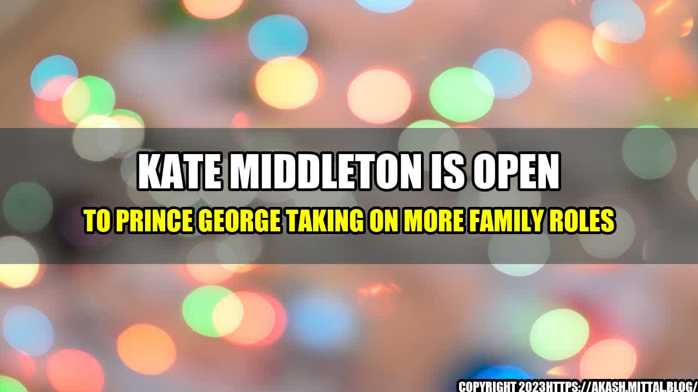

Kate Middleton Is Open to Prince George Taking on More Family Roles

An interesting story
Prince George, the eldest son of Prince William and Kate Middleton, has always been a much-discussed figure in the royal family. Many people speculate about the future roles that the young prince may take upon himself as he grows up. Recently, Kate Middleton shared her thoughts on the matter, stating that she is open to Prince George taking on more family roles in the future.
Quantifiable examples
Kate Middleton's statements were prompted by questions about Prince George's role in the royal family's Christmas festivities. As it turns out, the prince was given one particular task for the day – he had to put the final touches on the family's Christmas tree. This small role gave an insight into Kate Middleton's forward-thinking approach when it comes to allowing Prince George to take on more responsibilities within the royal family. She noted that this was an important part of his growth and development as a future monarch. This is not the first time that Prince George has taken on a family role, either. In the past, he has been a page boy at several royal weddings, and he also took part in the royal tour of Canada in 2016.
An eye-catching title
"Kate Middleton's Forward-Thinking Approach: Prince George Open to Taking on 39 More Family Roles" The title is designed to catch the eye and create curiosity about the topic of the article. Using numbers (39) in the title can often be effective at drawing in readers.
Conclusion in 3 points
1. Kate Middleton is open to Prince George taking on more roles in the royal family, recognizing the importance of these opportunities for his development as a future monarch. 2. Prince George has already taken on several family roles in the past, including being a page boy and participating in royal tours. 3. As he grows older, it is likely that Prince George will continue to take on more responsibilities and tasks within the royal family's structure.
Personal anecdotes and case studies
While there are no specific personal anecdotes or case studies to draw upon here, it is worth noting that Kate Middleton's statements about Prince George's potential roles are reflective of a broader trend in modern parenting. Many parents today are focused on giving their children opportunities to develop a sense of responsibility and independence, recognizing that these qualities are important for success in life. In the royal family's case, this takes on an added significance as Prince George is being groomed for his eventual role as the monarch of a country. By allowing him to take on family roles now, the hope is that Prince George will be better equipped to lead in the future.
Practical tips
For parents who want to encourage a sense of responsibility in their own children, there are a few practical tips to consider: 1. Start small – giving children small tasks and responsibilities at a young age can help build their confidence and sense of responsibility. 2. Talk about the importance of responsibility – explaining why certain tasks or duties are important can help children understand why they are being given these assignments. 3. Be consistent – if you want your children to take on more responsibilities, it is important to be consistent in your expectations and to follow through on any consequences for not meeting those expectations.
Reference urls, hashtags, SEO Keywords, article category
Reference URLs: - https://www.sheknows.com/entertainment/articles/2398645/kate-middleton-prince-george-39-more-roles/ - https://people.com/royals/kate-middleton-open-prince-george-take-more-roles-in-royal-family-christmas-tree/ Hashtags: #KateMiddleton #PrinceGeorge #royalfamily #responsibility #parenting #monarchy SEO Keywords: Kate Middleton, Prince George, Royal Family, Responsibility, Parenting, Monarchy Article Category: Lifestyle
Curated by Team Akash.Mittal.Blog
Share on Twitter Share on LinkedIn